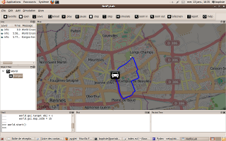

NetPyLab is a tool that makes it easy to simulate/emulate a wide variety of network conditions and network protocols on a single computer networks. NetPyLab is written in Python.
It relies on Scapy to sniff, forge and inject packets into real networks. Therefore, it can be used to communicate with real-world applications and servers (e.g., ping google with a delay of five seconds). In addition, it can be used for real-world simulations
NetPyLab was originally created by Rayene Ben Rayana during his PhD thesis in order to produce results for publications. NetPyLab was free and open source from the start and it is still under constant development.
Here is a screen of the user interface on a Ubuntu GNU/Linux host.
